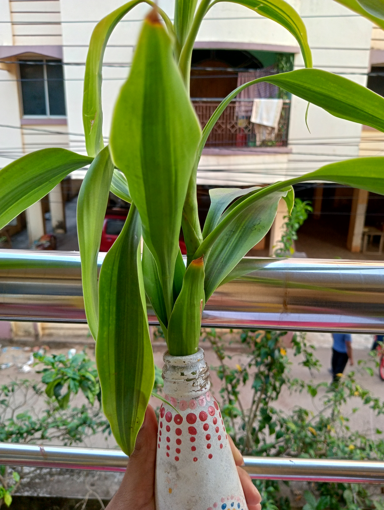
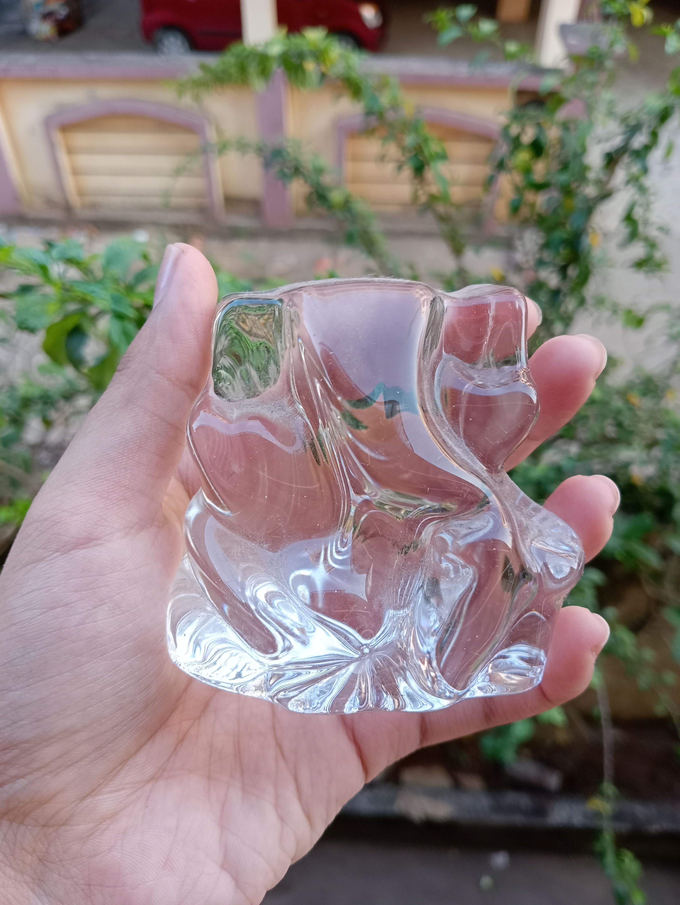

Test image -



Output on Google Lens
Hauser germany Ballpoint pen,
Colour pencils,
kids musical toy camera,
Chikki,
Pop it fidgets,
Shure SM58 Microphone,
Youva notebook diary,
Dracena Fragrens,
Crystal Ganesh statue,
Golden brass crystal diya
Output on Google Lens
Ballpoint pen,
Pencil case,
tripod,
Pencil box,
abacus,
microphone,
comic book,
kimono,
cowboy hat,
fountain pen
Result-
Google lens is better
I have tested 10 images.
Google net has predicted all the answers accurately.Mobilenet was less accurately.
So, according to my case study Google Lens is more accurate.